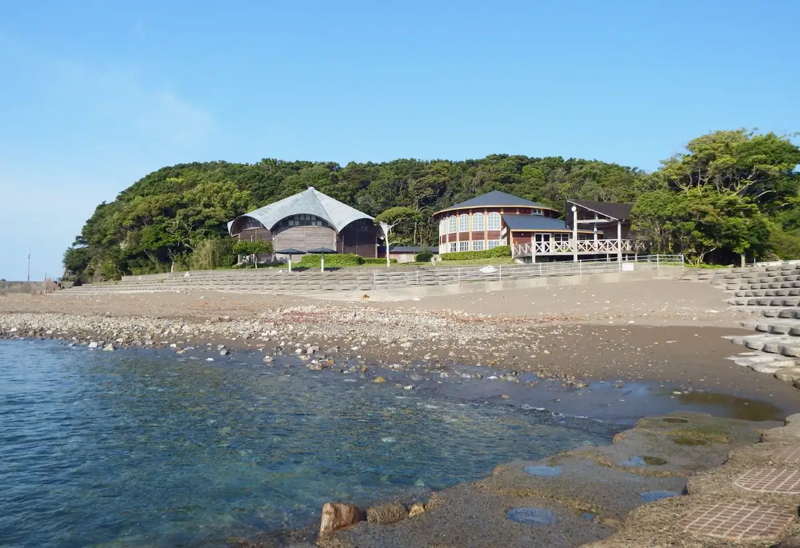
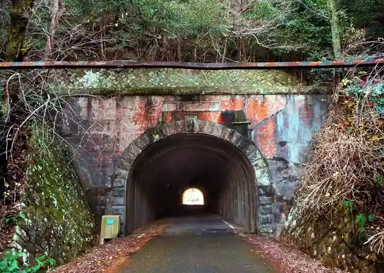
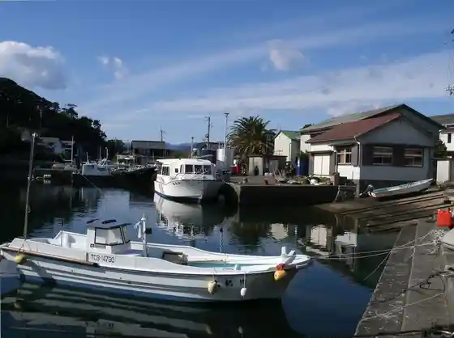
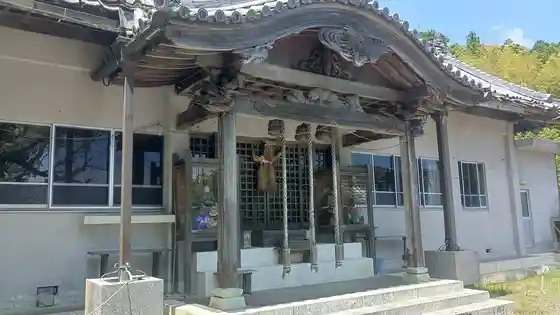

Mugi Town
Mugi Town · Tokushima
Mugi Town
Highlighted on the Tokushima map.

Sights
Mugi Town Moderu Mokuzo Shisetsu Morasuko Mugi
Dewa Shima Dentoteki Kenzobutsu Gun Hozon Chiku
Matsusaka Suido

Dewa Shima Koko no Tozai no Onami Shi no Ishitsumi Mi

Mugi Town Hachiman Shrine

Mugi Town Kawa